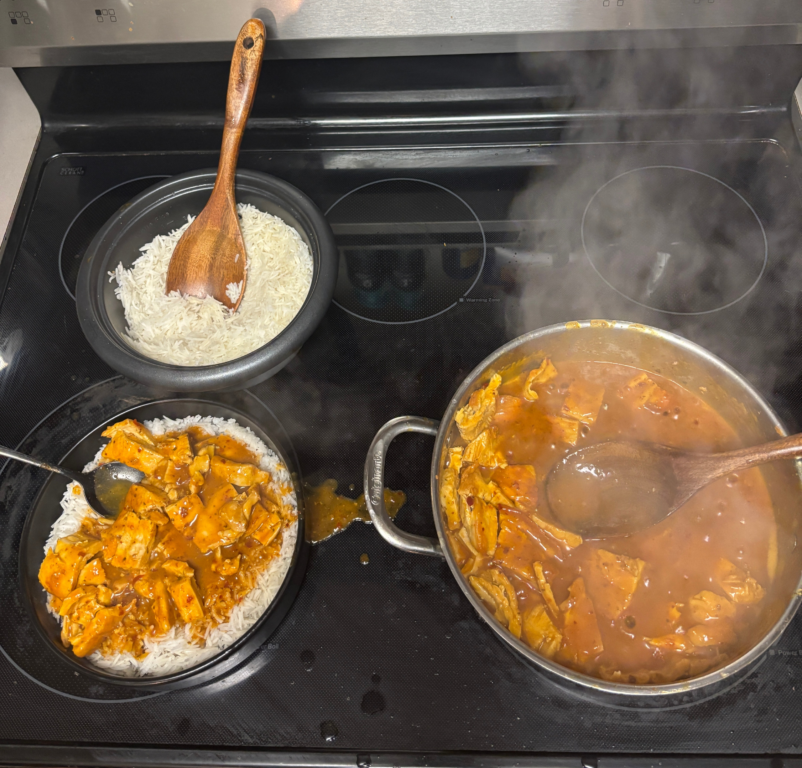
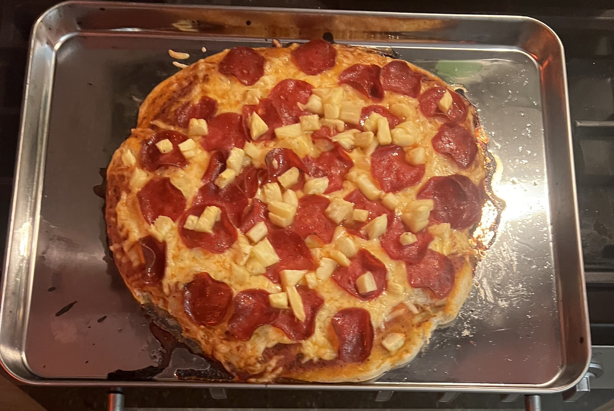
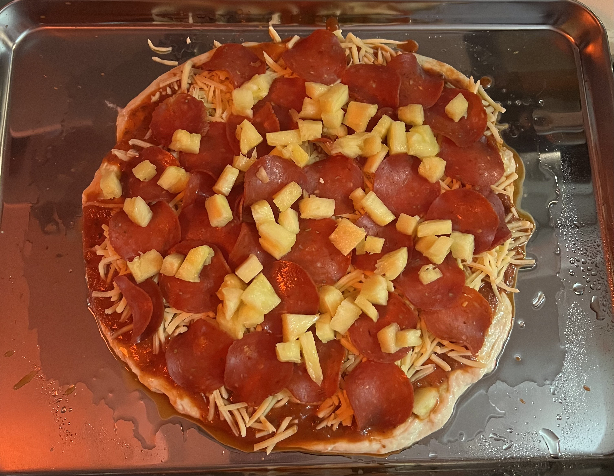
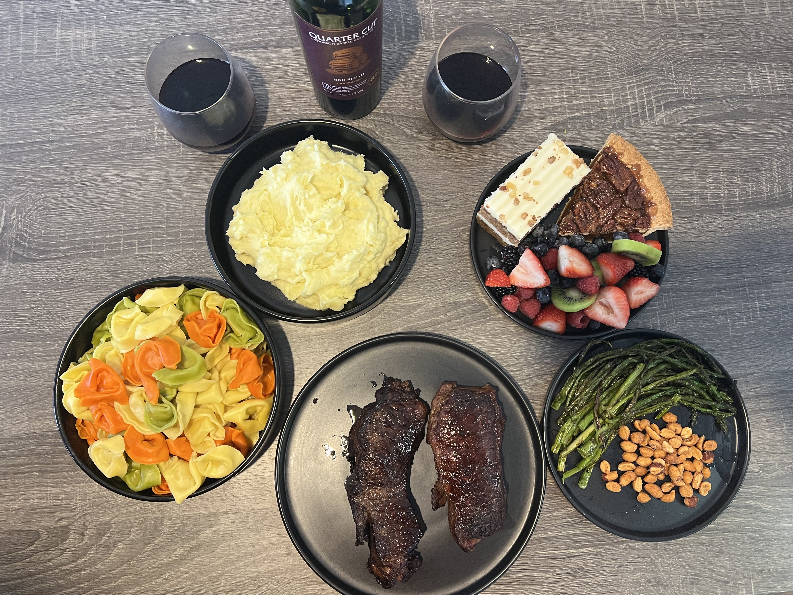

Photos
Photo Gallery
A mix of food I love to cook and moments from around Chicago.
Cooking
Dishes I have made recently, from pasta nights to pizza and steak.






Photos of Me
Some personal favorites from the city, skyline, and seasonal moments.